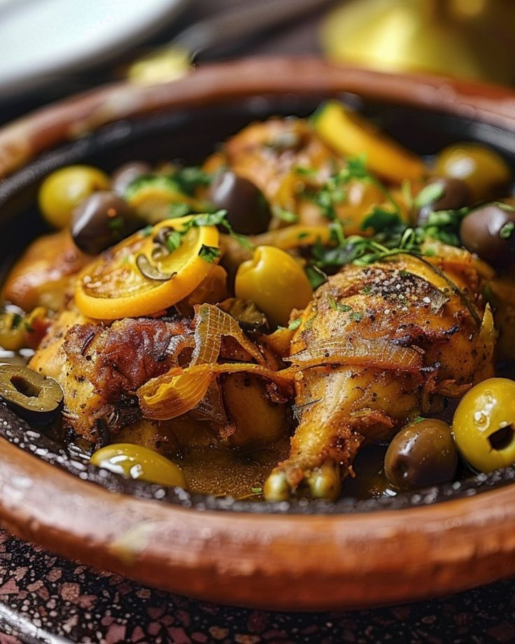
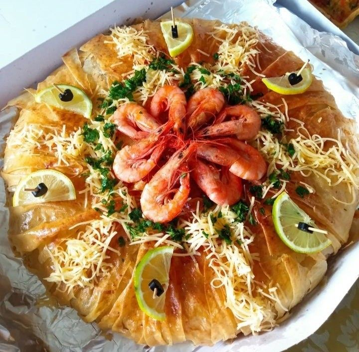
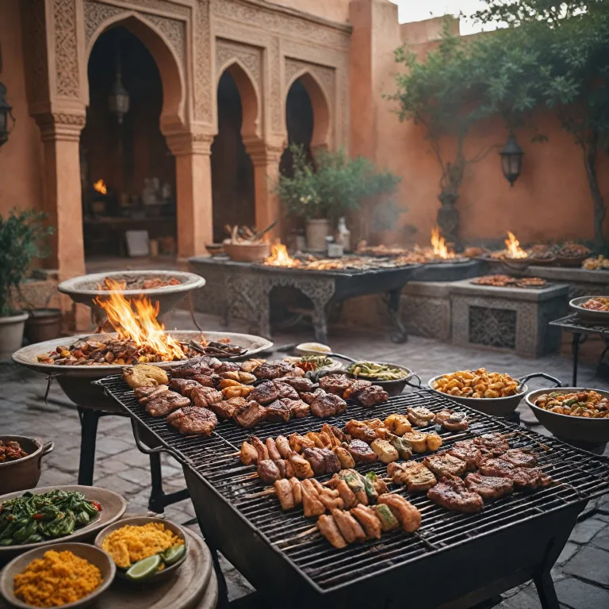
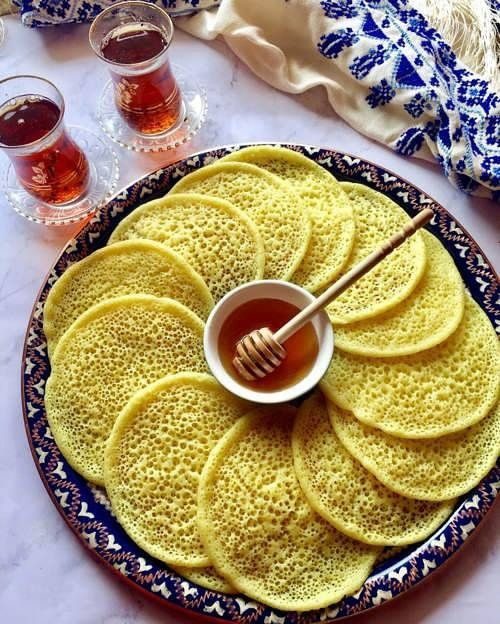

L'Excellence Culinaire

Le Tajine
Mijoté à l'étouffée dans son plat d'argile, symbole de partage.

Le Couscous
Le plat sacré du vendredi, harmonie de semoule et sept légumes.

La Pastilla
L'élégance du sucré-salé fassi dans une feuille de brick croustillante.

La Harira
Soupe onctueuse et réconfortante, cœur battant du Ramadan.
La Rfissa
Un délice traditionnel au poulet, lentilles et feuilles de crêpes.

La Chebakia
Mignardise mielleuse au sésame, incontournable douceur.

Les Chewa
Délicieuses brochettes grillées au feu de bois, parfumées aux épices.
Djaj Daghmira
Poulet rôti festif dans une sauce d'oignons caramélisés et d'épices.

Tajine aux Abricots
Un subtil mélange sucré-salé de viande tendre mijotée aux abricots moelleux.

Le Baghrir
Les fameuses crêpes aux mille trous, légères et servies avec du miel et du beurre.
La Harcha
Galette de semoule marocaine cuite à la poêle, croustillante et fondante.
Le Msemen
Crêpes feuilletées traditionnelles, croustillantes et beurrées à souhait.


.jpg)